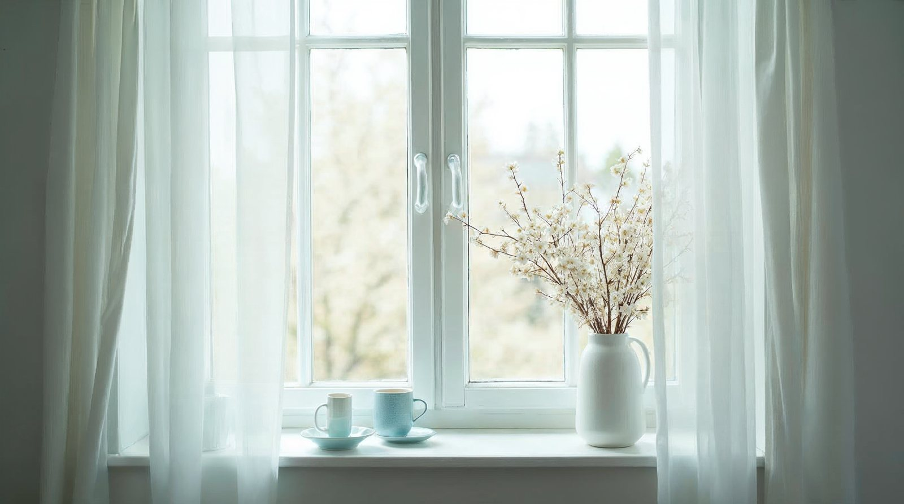
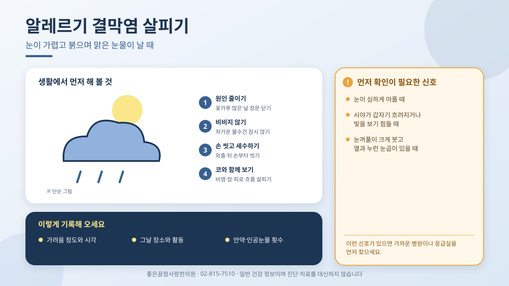

이종호 한의사 감수좋은꿈참사랑한의원 대표원장 (한의사 면허번호 19769)발행 2026-11-26 · 수정 2026-11-26
이 글의 차례
아침에 창문을 열고 환기를 시킨 뒤, 얼마 지나지 않아 눈이 간질간질해집니다. 손등으로 한 번 비비면 시원한 것도 잠시, 더 가려워지고 흰자가 붉게 달아오릅니다. 맑은 눈물이 흐르고 눈꺼풀이 퉁퉁 부어, 거울을 보면 밤새 운 사람처럼 보입니다.
진료실에서 비염 이야기를 나누다 보면 눈 가려움을 함께 말씀하시는 분이 정말 많습니다. 코가 막히고 재채기가 나는 계절이면 어김없이 눈도 가렵고, 비비다 보니 눈가 피부까지 거칠어졌다고 하십니다. 코와 눈은 이웃해 있어서 같은 자극에 함께 반응하기 쉽습니다.
알레르기 결막염은 눈의 흰자와 눈꺼풀 안쪽을 덮고 있는 얇은 막이 꽃가루, 먼지, 반려동물 털 같은 물질에 예민하게 반응하는 상태입니다. 전염되는 눈병과 달리 다른 사람에게 옮기지는 않지만, 가려움이 일상을 꽤 괴롭힙니다.
그래서 저는 눈 이야기를 들을 때 코와 피부, 잠, 그리고 어떤 계절과 장소에서 심해지는지를 함께 여쭙습니다. 언제, 어디서, 무엇을 할 때 가려운지가 보이면 생활에서 피할 것과 챙길 것이 한결 분명해집니다.
알레르기 결막염은 어떤 모습인가요
가장 큰 특징은 가려움입니다. 눈 안쪽 구석이나 눈꺼풀 가장자리가 간질간질하고, 비비고 싶은 마음을 참기 어렵습니다. 흰자가 붉어지고, 맑고 묽은 눈물이 흐르며, 실처럼 끈적한 하얀 눈곱이 생기기도 합니다.
대개 양쪽 눈에 함께 나타나고, 특정 계절이나 장소에서 심해졌다가 벗어나면 가라앉는 흐름을 보입니다. 재채기, 맑은 콧물, 코막힘 같은 비염 증상이나 아토피 피부염이 함께 있는 분이 많습니다.
계절에 따라 오르내리는 경우를 계절성, 일 년 내내 이어지는 경우를 통년성이라고 부릅니다. 봄과 가을 꽃가루 철에만 심해진다면 계절성, 집먼지진드기나 반려동물처럼 늘 곁에 있는 원인이라면 통년성일 가능성이 높습니다.
왜 눈이 이렇게 가려워질까요
알레르기 결막염은 몸의 면역이 원래 해롭지 않은 물질을 적으로 여기고 과하게 반응하면서 생깁니다. 꽃가루나 먼지가 눈 표면에 닿으면 그 자리의 세포가 가려움과 붓기를 일으키는 물질을 내보내고, 그 결과 가렵고 붉고 붓는 증상이 나타납니다.
- 봄철 나무 꽃가루, 늦여름과 가을 잡초 꽃가루
- 집먼지진드기, 곰팡이, 이불과 카펫의 먼지
- 고양이나 강아지 같은 반려동물의 털과 비듬
- 미세먼지, 담배 연기, 매운 연기 같은 자극
- 오래 낀 콘택트렌즈, 눈 화장품
- 건조한 실내 공기와 화면을 오래 보는 습관
가족 가운데 비염, 천식, 아토피가 있는 분은 알레르기 결막염도 함께 겪기 쉽습니다. 몸이 피곤하고 잠이 부족한 시기에는 같은 자극에도 더 크게 반응한다고 말씀하시는 분이 많아서, 저는 컨디션의 흐름도 함께 봅니다.
다른 눈병과 어떻게 다른가요
눈이 빨개진다고 모두 알레르기는 아닙니다. 흔히 유행성 눈병이라고 부르는 바이러스 결막염은 한쪽에서 시작해 다른 쪽으로 옮겨 가는 경우가 많고, 눈곱이 많으며 귀 앞 림프샘이 붓기도 합니다. 주변 사람에게 옮길 수 있어서 수건을 따로 쓰고 손을 자주 씻어야 합니다.
세균 결막염은 누렇고 끈적한 눈곱이 많아 아침에 눈꺼풀이 붙어 잘 떠지지 않는 모습이 특징입니다. 안구건조증은 가려움보다 뻑뻑함, 모래가 들어간 듯한 느낌, 화면을 오래 본 뒤의 피로가 더 큽니다.
알레르기 결막염은 가려움이 가장 두드러지고, 눈곱은 맑거나 실처럼 하얗고, 양쪽이 함께 증상을 보이는 경우가 많습니다. 그래도 겉모습만으로 나누기 어려운 때가 있으니, 처음 겪거나 평소와 다르다면 안과에서 확인해 보시길 권합니다.
비비면 왜 더 가려워질까요
가려울 때 눈을 비비면 잠깐 시원합니다. 그런데 비비는 압력이 눈 표면을 자극해 가려움을 일으키는 물질을 더 많이 내보내게 만듭니다. 그래서 비빌수록 더 가렵고, 더 붓고, 더 붉어지는 고리가 생깁니다.
손에 묻은 꽃가루나 먼지가 눈에 들어가는 것도 문제입니다. 바깥에서 돌아와 손을 씻기 전에 눈을 비비면 원인 물질을 직접 눈에 넣는 셈이 됩니다. 콘택트렌즈를 끼는 분은 렌즈 표면에도 꽃가루가 붙기 쉬워 불편이 더 오래갑니다.
비비고 싶을 때는 깨끗한 손으로 차가운 물수건을 눈 위에 잠시 얹어 보세요. 시원한 느낌이 가려움을 누그러뜨리는 데 도움이 될 수 있습니다. 아이들은 참기 어려워하니, 손톱을 짧게 깎아 주고 가려워하는 때를 기록해 두시면 좋습니다.
눈 화장을 하시는 분은 눈꺼풀 가장자리에 화장품이 남지 않도록 저녁에 부드럽게 지워 주세요. 속눈썹 뿌리 쪽에 남은 화장품과 먼지가 가려움을 더 오래 끌고 가는 경우가 있습니다. 가려운 시기에는 새로운 화장품을 시작하지 않는 것도 한 가지 방법입니다.
코와 눈은 왜 함께 불편해질까요
코와 눈은 눈물이 내려가는 길로 이어져 있습니다. 눈에서 흐른 눈물은 눈 안쪽 구석의 작은 구멍을 지나 코 안으로 내려갑니다. 그래서 코가 막히고 붓는 시기에는 눈물이 잘 빠지지 않아 눈이 촉촉하게 젖고, 눈에 들어간 자극이 코로 넘어가 재채기가 나기도 합니다.
같은 꽃가루가 코와 눈에 동시에 닿는 것도 이유입니다. 비염이 심한 계절에 눈 가려움도 함께 커지고, 비염이 가라앉으면 눈도 편해지는 분이 많습니다. 그래서 눈만 따로 보기보다 코와 함께 살피는 편이 실제 생활에 더 쓸모가 있습니다.
한의학에서는 눈과 코, 피부를 몸 바깥과 맞닿은 경계로 보고, 그 경계가 예민해진 흐름을 함께 살핍니다. 잠과 소화, 몸의 온기, 피로의 정도를 함께 여쭙는 것도 그 때문입니다.

계절마다 어떻게 달라지나요
봄에는 나무 꽃가루가 바람을 타고 멀리까지 날아다닙니다. 맑고 바람이 부는 날 오전에 가려움이 커지고, 비가 온 다음 날은 조금 편하다고 말씀하시는 분이 많습니다. 황사와 미세먼지가 겹치는 날에는 눈이 뻑뻑하고 따가운 느낌까지 더해지기도 합니다.
늦여름부터 가을까지는 쑥이나 돼지풀 같은 잡초 꽃가루가 많아집니다. 이 시기에 증상이 심한 분은 봄에는 괜찮다가 추석 무렵부터 눈과 코가 함께 불편해지는 흐름을 보입니다. 겨울에는 꽃가루가 줄지만, 창문을 닫고 난방을 하면서 실내 먼지와 건조한 공기 때문에 불편이 이어지는 분이 계십니다.
내 증상이 어느 계절에 커지는지 알면 그 시기가 오기 전에 미리 준비할 수 있습니다. 해마다 같은 시기에 불편해진다면 그 무렵 안과 진료를 미리 잡아 두거나, 외출과 환기 습관을 조금 앞당겨 바꿔 보시는 것도 방법입니다.
아이와 어른은 조금 다르게 봅니다
아이는 가려움을 말로 설명하기보다 행동으로 보여 줍니다. 눈을 자주 비비거나 깜빡이고, 얼굴을 찡그리며, 눈 밑이 거뭇하게 보이기도 합니다. 눈을 자꾸 깜빡이는 모습이 틱처럼 보여 걱정하시는 보호자도 계신데, 가려움 때문인 경우도 있어 함께 살펴봅니다.
어른은 일과 생활 습관이 더 큰 몫을 합니다. 화면을 오래 보고, 콘택트렌즈를 끼고, 눈 화장을 하며, 건조한 사무실에 오래 있는 생활은 눈 표면을 지치게 합니다. 알레르기 반응과 건조함이 겹치면 가려움과 뻑뻑함이 함께 오는데, 이런 분은 두 가지를 나눠 관리하는 것이 도움이 됩니다.
먼저 이렇게 여쭙니다
처음 오시면 아래 질문들을 여쭙니다. 정확한 날짜가 아니어도 대략적인 흐름을 떠올려 오시면 충분합니다.
- 눈 가려움은 어느 계절, 어느 장소에서 심해지나요?
- 양쪽이 함께 가려운가요, 한쪽만 가려운가요?
- 눈곱은 맑은가요, 누렇고 끈적한가요?
- 재채기, 콧물, 코막힘이나 피부 가려움이 함께 있나요?
- 반려동물을 키우시거나 콘택트렌즈를 쓰시나요?
- 사용 중인 안약이나 먹는 알레르기 약이 있나요?
잠과 피로도 함께 여쭙니다. 밤에 코가 막혀 입을 벌리고 자거나, 가려움 때문에 깨는 일이 잦다면 낮의 피로와 집중에도 영향이 갑니다. 아이라면 학교나 학원에서 눈을 자주 비비는지도 보호자께 함께 여쭙습니다.
일상에서 먼저 해 볼 수 있는 것
알레르기 결막염 관리는 원인 물질이 눈에 닿는 양을 줄이고, 눈 표면을 편하게 해 주는 데서 시작합니다. 가능한 것부터 하나씩 해 보세요.
- 꽃가루가 많은 날은 창문을 닫고, 환기는 짧게 여러 번 하기
- 외출할 때 안경이나 선글라스로 바람과 꽃가루 막기
- 집에 돌아오면 손을 먼저 씻고 세수하기
- 이불과 베개 커버는 자주 빨고 햇볕이나 건조기로 말리기
- 가려울 때는 비비지 말고 차가운 물수건 얹기
- 콘택트렌즈는 증상이 심한 시기에 안경으로 바꿔 보기
인공눈물은 눈 표면에 붙은 꽃가루와 먼지를 씻어 내는 데 도움이 될 수 있습니다. 하루에 여러 번 쓰신다면 보존제가 없는 일회용 제품을 고르는 편이 눈에 부담이 적습니다. 처방받은 안약과 함께 쓰실 때는 몇 분 간격을 두시면 됩니다.
반려동물과 함께 지내신다면 침실만큼은 들이지 않는 공간으로 정해 보세요. 잠자는 동안 눈과 코가 원인 물질에 덜 닿게 하는 것만으로도 아침의 불편이 줄어드는 분들이 계십니다. 실내 습도는 너무 건조하지 않게 맞추고, 화면을 오래 보는 날은 의식적으로 눈을 감고 쉬는 시간을 만들어 주세요.
한의원에서 함께 살필 수 있는 경우
- 비염과 눈 가려움이 계절마다 함께 오르내리는 경우
- 안약을 쓰면서도 피로하거나 잠이 부족한 날 가려움이 커지는 경우
- 눈을 자주 비벼 눈가 피부가 거칠어지고 붉어진 경우
- 코막힘 때문에 잠이 얕고 아침에 머리가 무거운 경우
- 아토피나 피부 가려움이 함께 있어 몸 전체가 예민해진 경우
좋은꿈참사랑한의원에 오시면 먼저 아래 '먼저 확인이 필요한' 신호가 없는지부터 봅니다. 그다음 맥을 짚고 코와 눈, 피부, 잠과 소화를 함께 살핍니다. 진찰한 내용을 바탕으로 침, 생활 관리 안내, 한약 상담 가운데 지금 상태에 맞는 것을 고릅니다.
한약을 상의할 때는 드시는 알레르기 약과 다른 약을 모두 확인하고 신중하게 정합니다. 임신 중이시거나 임신 가능성이 있다면 먼저 알려 주시고, 산부인과와 상의하시도록 안내합니다. 안과 진료와 안약은 그대로 이어 가시면서 한의원 진료를 나란히 받으실 수 있습니다.
침 치료를 받으시는 날에는 눈 화장을 가볍게 하고 오시면 눈 주변을 살피기가 수월합니다. 렌즈를 끼고 계시다면 진료 전에 말씀해 주세요. 그날의 눈 상태와 진료 뒤의 느낌을 다음 진료 때 나눠 주시면 방향을 함께 조절해 갑니다.
이렇게 기록해 오시면 상담이 쉬워집니다
가려움이 심한 날과 덜한 날을 2주 정도 적어 보시면 원인을 좁히는 데 큰 도움이 됩니다.
- 가려움의 정도(약함, 보통, 심함)와 시각
- 그날 있었던 장소와 활동(외출, 청소, 반려동물과 놀기 등)
- 날씨와 꽃가루, 미세먼지 예보
- 코 증상과 피부 증상이 함께 있었는지
- 사용한 안약과 인공눈물 횟수
- 잠든 시각과 밤에 깬 횟수
기록을 모아 보면 청소한 날, 이불을 턴 날, 바람이 많이 분 날처럼 가려움이 커지는 조건이 드러나곤 합니다. 그 조건 하나를 피하는 것부터 시작하면 생활의 부담도 크지 않습니다.
해마다 돌아오는 가려움을 위해
알레르기 결막염은 한 번에 사라지기보다 계절과 생활에 따라 오르내리는 경우가 많습니다. 그래서 가려움이 없는 시기에도 손 씻기, 이불 관리, 환기 습관을 이어 가는 것이 다음 계절을 조금 더 편하게 맞는 준비가 됩니다.
이번 주에는 집에 돌아오면 손부터 씻는 습관 하나만 골라 보세요. 다음에 오시면 가려움 기록을 함께 펼쳐 보며, 코와 눈, 잠의 흐름을 같이 짚어 보겠습니다.
이런 증상은 먼저 확인이 필요합니다
- 눈이 심하게 아프면서 시야가 갑자기 흐려지거나 빛을 보기 힘든 경우
- 한쪽 눈꺼풀이 크게 붓고 붉어지며 열이 나고 누런 눈곱이 많은 경우
이런 신호가 있으면 한의원보다 가까운 병원이나 응급실을 먼저 찾으세요.
함께 읽으면 좋은 글
- 아이가 아침마다 재채기와 맑은 콧물, 코막힘을 달고 사는 알레르기 비염은 어떻게 살피나요?
- 눈이 뻑뻑하고 모래가 들어간 듯 따갑거나 쉽게 피로한 안구건조증은 어떻게 살피나요?
- 환절기 아침에 공원을 걷고 나면 재채기와 맑은 콧물이 쏟아질 때는 어떻게 살피나요?
- 마스크를 오래 쓰거나 알레르기가 있는 사람은 진료 전에 무엇을 알려야 하나요?
- 눈 밑이나 눈꺼풀이 며칠째 파르르 떨리는 눈꺼풀 떨림은 어떻게 살피나요?

여쭙는 것
- 눈 가려움은 어느 계절, 어느 장소에서 심해지나요?
- 양쪽이 함께 가려운가요, 한쪽만 가려운가요?
- 눈곱은 맑은가요, 누렇고 끈적한가요?
생활에서 해 볼 것
- 꽃가루가 많은 날은 창문을 닫고, 환기는 짧게 여러 번 하기
- 외출할 때 안경이나 선글라스로 바람과 꽃가루 막기
- 집에 돌아오면 손을 먼저 씻고 세수하기
한의원에서 함께 살필 것
- 비염과 눈 가려움이 계절마다 함께 오르내리는 경우
- 안약을 쓰면서도 피로하거나 잠이 부족한 날 가려움이 커지는 경우
- 눈을 자주 비벼 눈가 피부가 거칠어지고 붉어진 경우
먼저 확인이 필요한 신호
- 눈이 심하게 아프면서 시야가 갑자기 흐려지거나 빛을 보기 힘든 경우
- 한쪽 눈꺼풀이 크게 붓고 붉어지며 열이 나고 누런 눈곱이 많은 경우
한눈에 보는 표
| 구분 | 핵심 |
|---|---|
| 여쭙는 것 | 눈 가려움은 어느 계절, 어느 장소에서 심해지나요? 양쪽이 함께 가려운가요, 한쪽만 가려운가요? |
| 생활에서 해 볼 것 | 꽃가루가 많은 날은 창문을 닫고, 환기는 짧게 여러 번 하기 외출할 때 안경이나 선글라스로 바람과 꽃가루 막기 |
| 한의원에서 함께 살필 것 | 비염과 눈 가려움이 계절마다 함께 오르내리는 경우 안약을 쓰면서도 피로하거나 잠이 부족한 날 가려움이 커지는 경우 |
| 먼저 확인이 필요한 신호 | 눈이 심하게 아프면서 시야가 갑자기 흐려지거나 빛을 보기 힘든 경우 한쪽 눈꺼풀이 크게 붓고 붉어지며 열이 나고 누런 눈곱이 많은 경우 |
자주 묻는 질문
알레르기 결막염도 다른 사람에게 옮나요?
알레르기 결막염은 몸이 꽃가루나 먼지에 예민하게 반응해 생기는 것이라 옮지 않습니다. 다만 유행성 눈병과 겉모습이 비슷할 때가 있어, 처음 겪거나 한쪽에서 시작했다면 안과에서 확인해 보시길 권합니다.
안약을 쓰는 중인데 한의원 진료를 받아도 되나요?
함께 받으실 수 있습니다. 사용하시는 안약과 드시는 약을 알려 주시면 그에 맞춰 진료 방향을 정하고, 안약은 안과 처방대로 이어 가시도록 안내합니다.
가려울 때 찬물로 눈을 씻어도 되나요?
수돗물로 눈을 직접 세게 씻기보다 깨끗한 손으로 세수하고, 차가운 물수건을 눈 위에 얹는 방법을 권합니다. 꽃가루와 먼지를 씻어 내려면 보존제 없는 인공눈물을 쓰는 편이 눈에 부담이 적습니다.
아이가 눈을 자꾸 비비는데 어떻게 하면 좋을까요?
손톱을 짧게 깎아 주고, 바깥에서 돌아오면 손과 얼굴을 먼저 씻게 해 주세요. 가려워하는 시각과 장소를 적어 두시면 안과와 한의원 상담 때 원인을 좁히는 데 도움이 됩니다.
콘택트렌즈를 계속 껴도 괜찮을까요?
증상이 심한 시기에는 렌즈 표면에 꽃가루가 붙어 불편이 오래갈 수 있어 안경으로 바꿔 보시길 권합니다. 렌즈 사용 여부는 안과 선생님과 상의하시면 가장 정확합니다.
좋은꿈참사랑한의원은 재진 때 지난번 이야기부터 이어서 여쭙니다. 진료시간과 예약은 오시는 길에서 확인하세요.
어디서 상담받을 수 있나요?
좋은꿈참사랑한의원은 서울 동작구 만양로2길 2 신성빌딩 3층·5층(서울 동작구 상도동, 7호선 상도역 3번 출구 근처)에 있습니다. 한의사 3명(이종호 대표원장, 조영기 수석진료원장, 정원영 진료원장)이 진료합니다. 진료시간은 평일 09:30~20:00(점심 13:00~14:00), 토·일·공휴일 09:30~15:00이며, 방문 전 전화로 확인을 권합니다. 예약은 네이버 예약, 카카오톡 상담, 전화 02-815-7510로 받습니다.
이 글은 일반적인 건강 정보이며 개인의 진단이나 치료를 대신하지 않습니다. 증상이 있거나 복용 중인 약이 있다면 진료를 통해 확인하세요. 치료 효과는 개인마다 다를 수 있습니다.
작성 기준: 일반적으로 알려져 있는 건강 정보를 참고해 정리했습니다(대표원장 감수). 증상 기록은 1~2주 동안 하루 1회, 비슷한 시간에 적어 오시면 지난 상태와 비교하기 쉽습니다.